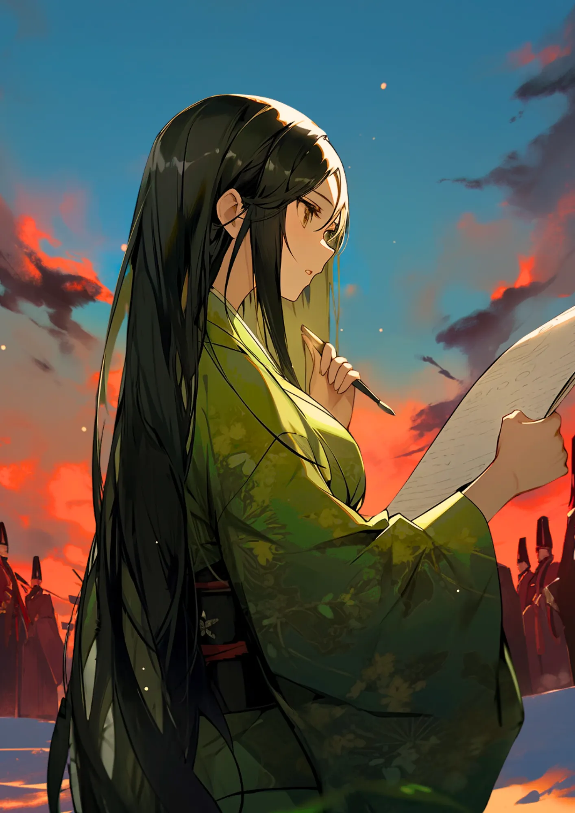

清少納言
貴族生活の伝承者
 平安のメモ帳
平安のメモ帳
清少納言は枕草子のネタを集めるために、メモ帳を持ち歩いていたんだ。
冬の朝
これは、冬はつとめてってやつだな！宮中にいた貴族たちの朝の様子を書いていたんだ。
[人物プロフィール]
生没年
966年～1025年
時代
平安時代
身分
作家・芸術家
をかしというのはわたくしが見つけたのよ
清少納言ってどんなひと？

清少納言は枕草子を書いたことで知られているわ。エッセイだけじゃなくて、和歌も嗜んでいたようね。実は清少納言というのは本名ではなくて、彼女の本当の名前は分かっていないのよ。
コラム
（カード右上）夜をこめて 鳥の空音は はかるとも よに逢坂の 関は許さじ
カードの効果解説！
枕草子執筆
枕草子って、たしか春はあけぼの……っていう書き出しだったよな。内容は清少納言が思ったことをありのままに書いたもので、結構毒舌だったんだぜ。でも、仕えていた相手の定子のことは、ほめちぎっていたな。

 紫式部のライバル
紫式部のライバル
紫式部とは仕えていた妃が違うから顔を合わせたことは無いと言われているけど、でも2人は噂話でお互いのことを知っていたみたいなんだ。もしかしたら清少納言も紫式部のことを意識していたかもね。
クイズ！：清少納言が書いた有名な随筆はなんでしょう？